Or, Misdirection on an Imaginary Line
Version: 66149d0
As a convenient fiction, assume it is possible to map “I believe” to a point on a finite, one dimensional space. “Taking a position” means placing yourself at the appropriate point.
For any particular belief, you’re not the only one doing so. At any given time, many people are expressing their beliefs. If we happen to observe someone doing so, our brains quickly establish our relative position to theirs, estimating the difference between opinions.
These differences have direction in addition to magnitude. With routine evaluations, we are adept at orienting ourselves to this space. We quickly assess how far we would have to move relative to our expression to comply with someone else’s.
When people say someone, “defends their position,” they’re often giving a name to something like inertia. There are a variety of costs — social, psychological, and even institutional — associated with moving from one point to another. It’s generally easiest to stay where you are, at least perceptually.
But — ignoring that individual opinions are noisy samples from complex, latent, and generally conditioned distributions rather than an exact projection of some underlying, isolated belief — people do “change their minds” and their probable, subsequently realized positions.
In doing so, the picture becomes dynamic. The moving actor may be aware that they have moved, as well as the direction of their motion. If observed, their counterpart may have a rough idea of the change as well. The “relative to”s multiply.
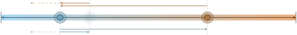
Alice (blue-er) may be aware of where she is now and the direction and cost of traveling back to where she was.
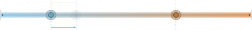
Bob (red-er) may also be aware of this aspect of Alices change, although he may instead perceive it as a change away from him, rather than in terms of going back.
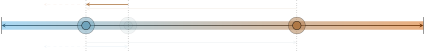
Extrapolating, Bob may furthermore assume Alice’s probable continuation.
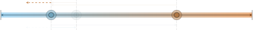
Alice, too, may perceive a bias to her future changes.
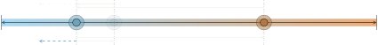
The question now becomes: how should this change affect Bob’s underlying belief and, by implication, future expressions? If he trusts her, he may assume that the change to her position reflects evidence that she had access to and he did not. Therefore, his change should match hers, at least in direction.
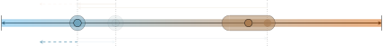
But, Bob also knows he and Alice started in disagreement. That is, their previous experiences — the ones integrated in their beliefs and observed through expressed opinions — were different, assuming sincerity in expression. Thus, Bob may choose to stay put, discarding Alice’s opinion as irrelevant.
Alternatively, Bob may interpret Alice’s movement as evidence of an environmental change that he has yet to observe or directly interrogate. And, given that they initially disagreed, Bob may infer that this evidence calls for reinforced disagreement — movement further away from Alice.
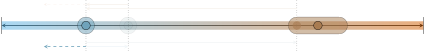
The previous illustration also applies when Bob generally distrusts Alice. To illustrate, assume Bob and Alice start out in the same position.
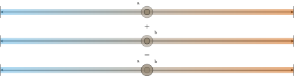
Again, Alice moves.
Again, Bob must interpret and weight the evidence inherent to his observation of her expression. However, this time, the initial context of agreement is less likely to compel Bob to move away from Alice. Instead, given their initial agreement — and assuming Bob trusts Alice and believes her expression was sincere — his best action is to update his beliefs to match Alice’s expression.
But, what if Bob doesn’t trust Alice? What if his experiences with her in other contexts makes him believe she’s an unreliable or even deceptive source of information? In this case, the update rule previously explored seems plausible — rather than ignoring her observable change, he moves to oppose it. Again, distance grows.
Moving away from contexts with familiar counterparts, what happens when Bob encounters someone he does not know, Carol, expressing a particular belief? How does he integrate this information?
He may simply ignore the information offered by her expression. After all, if he has no experience with Carol, his assessment of her reliability is bound to be error-prone.
Of course, her expression does communicate some information. If Bob generally trusts strangers — assuming both reliability and sincerity — he may move towards Carol, even absent direct experience with her.
Alternatively, if Bob generally distrusts strangers — assumes that they are either unreliable or deceptive or both — he may instead move away from the stranger, Carol.
Yet, as the careful reader may have noticed, Bob is a circle and Carol is a square. While Bob may not personally know with Carol, he may have accumulated a good deal of experience with squares that he can use as a template for evaluation and judgment. That is, he may use an accessible stereotype (here, shape) instead of an unconditional level of trust.
Consider the addition of another stranger, Ted. Like Carol, Ted is a square. Last week, Bob observed Ted taking a position.
Joining the two observations — Ted then, Carol now — by accessible stereotype, Bob may perceive a leftward motion in squares.
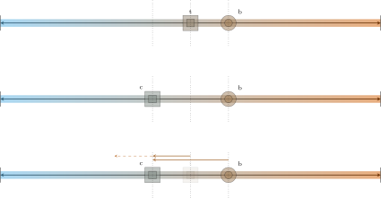
Reversing the temporal ordering of his observations, he’d perceive a rightward motion instead.
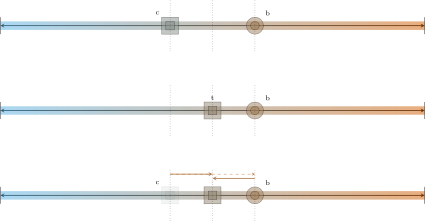
But, in both cases, the perception of motion is noisy at best. Carol may stand in for Tim and vise-versa only if the homogeneity of beliefs induced by “being a square” is absolute, an improbable condition. In all other cases, the motion may be mere illusion — resampled, Tim and Carol may take the same positions previously taken. Thus, if Bob already updated his beliefs in response to his perception of motion and trust/distrust in squares, he risks integration of noise as signal. In turn, this affects how he’ll pay attention to, interact with, and learn from squares in the future.
Of course, we’re more than just circles or squares. The very best of moral philosophies — or, at least the ones I prefer — prescribe treating and judging individuals as individuals, rather than on the basis of their traits. Yet, to deny that group identity isn’t a vital and necessary aspect of how we interpret and relate to the world — an ever-present and accessible prior — is to engage in willful delusion. Moroever — and contrary to some popular beliefs — stereotyping is not inherently maladaptive. Consider the Platinum Rule: “Treat others the way they want to be treated.” This rule is hard to implement for strangers absent some coarse model of their experiences and expectations.
However, stereotypes also represent an exploitable vector for manipulative attack. The challenge is to recognize when stereotypes misguide you and, more critically, when they’re used to manipulate you. Consider that human beings don’t have just one identity — we have and cultivate many of them. And identities themselves aren’t fixed concepts. But, when presented with information for evaluation and judgment, some identities are more accessible and salient than others.
Why?
Partially, it’s a function of biography — the chance (albeit predictable) bad encounter with someone “not like you” that dominates your expectations in a path-dependent way. Something as simple as a competitive context — an omnipresent reality — may compel adoption of a negative stereotype. And reproduction along big structural lines is startlingly easy. There is no easy fix here.
However, we do see position taking on mass and social media presented as exemplars of some underlying social reality. And, to some degree, it is. But, the incentives for both platforms and content producers select for ever-salient discord. And discord is an easy story to tell.
As a hypothetical, imagine that you’re a producer at a news network. There is a strong incentive to inflate both the apparent distance to and relative motion of people with identities underrepresented in your audience. You can do that by carefully (but with incredible ease) selecting which out-group voices to present as adversaries, and in what implicit order.
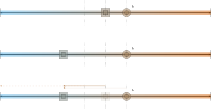
But, that’s only one side of the manipulative template. Thus far, Bob has been an individual with a circle identity, important only in that it was not a square. But, by presenting circle-aligned commentary, the manipulative media producer can remove Bob’s particular position from the equation. They can replace his subjective experiences with their own position, so long as distrust in the out-group exceeds the resulting incredulity for an in-group position too far removed from Bob’s. “You are here” gets lost.
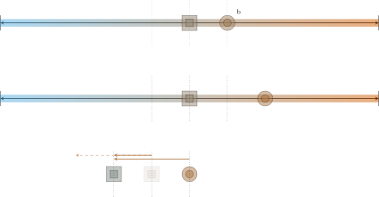
Meanwhile, none of this has accounted for any direct evidence about a hugely complex and dynamic world that may and almost certainly has undergone changes. The message conveyed concerns identity. Particular issues are merely the substrate. The misdirection induces pathology — one that is surprisingly difficult to defend against, given our cognitive hardware.
At the level of an individual it may be useful to ask this outline of questions for evaluation,
But, really, for all the exhortation about thinking carefully and exercising media literacy, this isn’t a problem subject to piecemeal patches at the individual level. The information environment is fucked because the incentives are wrong. It’s all entertainment, with unpredictable major news on world events as tonight’s regularly scheduled programming. It’s hard to see reality when everything around you is busy telling you dark twisted fantasies.